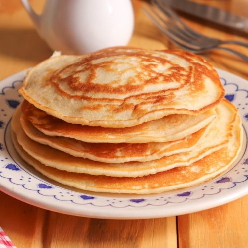

Home|
Receita 1|
Receita 2|
Receita 3|
Ingredientes
- 1 ovo
- 1 xícara de leite
- 1 colher (sopa) de oléo
- 1 xícara de farinha de trigo
- 1 pitada de sal
Modo de preparo
- Bata todos os ingredientes no liquidificador até obter uma consistência cremosa.
- Unte uma frigideira com óleo e despeje uma concha de massa.
- Faça movimentos circulares para que a massa se espalhe por toda a frigideira.
- Espere até a massa se soltar do fundo, vire e deixe fritar do outro lado
- Acrescente o recheio de sua preferência, enrole e está pronta para servir.

Veja a receita completa